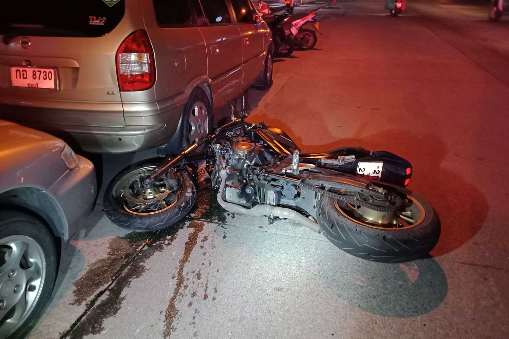
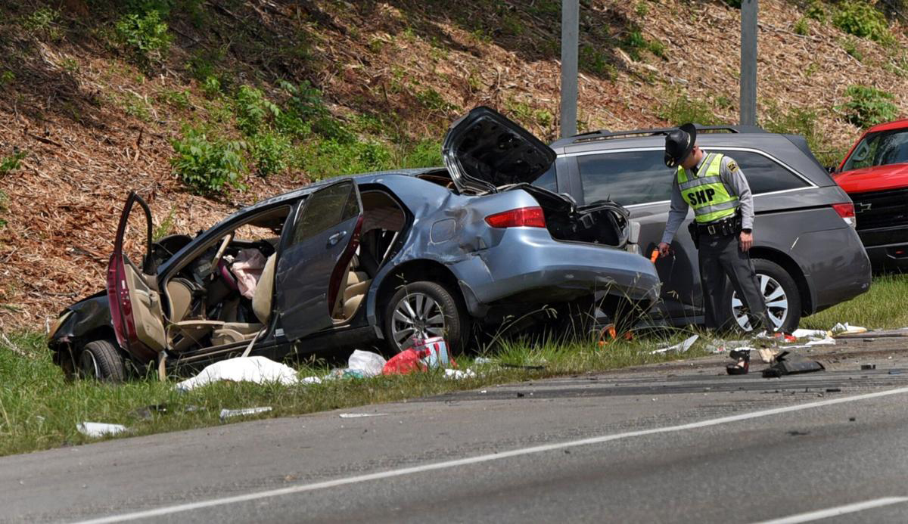

BlackOut
"Trinkkultur" in the world
The most riskful thing of drunk driving is to loose your license not your life, right?
The consumption of alcohol among young people in recent years
is increasingly turning into a real abuse, defined as binge-drinking: drinking with only purpose to get drunk.

Tap to reveal
The heavy consequences involve exposition to direct medical/health effects, where the consumption of alcohol in
young people causes a 4x higher risk of developing an addiction in adulthood. In addition to this, it is estimated
that more than 25% of accidents for young people between the ages of 18 and 24 are attributable to alcohol.

Tap to reveal
Teenagers regularly consume alcoholic beverages, among which beer stands out, followed by wine and lastly liquors.
These attitudes, still partially linked to the present cultural heritage, are however embracing a very risky drift,
that is no longer linked to the rituality of meals and conviviality, but rather one, that is, as Barnao defines,
connected to a social desire of adolescents to integrate within the group and to feel more uninhibited. Click here to access the dataset